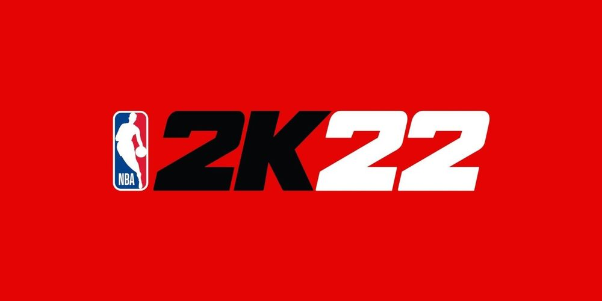

Other Games that I play:
-

-

-

Video Games(FIFA)
FIFA 22 is an association football simulation video game published
by Electronic Arts as part of the FIFA series. It is the 29th
installment in the FIFA series, and was released worldwide on 1
October 2021 for Microsoft Windows, Nintendo Switch, PlayStation 4,
PlayStation 5, Xbox One and Xbox Series X. I have been playing the
EA Fifa series since 2010 now and have competed in my college for
competition and won for 2 consecutive years. Kylian Mbappe is the
cover athlete for 2nd consecutive year. FIFA 22 was released
worldwide on 1 October 2021. Son Heung-Min, David Alaba, Christian
Pulisic, Phil Foden, Alphonso Davies and Trent Alexander-Arnold were
named as the official ambassadors of the game. Television presenter
and singer Yūka Kageyama was appointed ambassador for the Japanese
market.
Features of Fifa 22:
Hypermotion technology
FIFA 22 introduces "Hypermotion" technology, which uses motion
capture data collected by having 22 real-life players play a
complete, high-intensity football match in motion capture suits. The
data collected from player movements, tackles, aerial duels and
on-ball actions is later used to power the way both individuals and
teams move across the pitch in FIFA 22. This feature is only
available on the PlayStation 5, Xbox Series X/S and Stadia versions
of the game.
Career mode
As with previous FIFA entries, a single-player "career mode" is
featured in FIFA 22, where a player can control a whole team or one
player throughout a 25-year career as a manager or player. FIFA 22
introduces a create-a-club option in manager career, allowing
players to design a new club with customised kits, crest, and home
stadium. The player career mode also introduces experience points
and "perks" that can be used to improve the player's stats.
Ultimate Team
FIFA 22 Ultimate Team introduced "FUT Heroes" cards and these are
cards that have a unique league-specific chemistry which is tied to
their specific hero moment, providing a green club link to any
player within the same league as well as the usual nation link. The
full heroes card list includes: Mario Gómez, Tim Cahill, Ole Gunnar
Solskjær, Jerzy Dudek, Joe Cole, Aleksandr Mostovoi, David Ginola,
Iván Córdoba, Freddie Ljungberg, Jürgen Kohler, Lars Ricken, Antonio
Di Natale, Clint Dempsey, Robbie Keane, Abedi Pele, Jorge Campos,
Fernando Morientes, Sami Al-Jaber and Diego Milito. As in FIFA 21,
several notable former players are given "icon" cards. New players
added for this entry include Iker Casillas, Robin van Persie, Wayne
Rooney and Cafu. Players will also have the option to preview Silver
and Gold player packs as in the previous game, by allowing players
to preview what they would receive from a pack before deciding
whether to purchase it.
VOLTA Football
New VOLTA mechanics in FIFA 22 will allow players to trigger special
abilities during a match that would boost a player's avatar in a
specific attribute. There will be three Signature Abilities
available: Power Strike, Pure Pace and Aggressive Tackle. Players of
FIFA 22 will also have the opportunity to play with up to three
players in various online mini game modes, which will be part of the
new VOLTA Arcade.
Licenses
The game features more than 30 officially licensed leagues, more
than 700 clubs and more than 17,000 players. For the first time, the
Indian Super League and its eleven teams were added, as well as the
UEFA Europa Conference League, the third tier of European club
football established in 2021. Juventus, Roma, Atalanta and Lazio are
not featured in FIFA 22 and instead are known as Piemonte Calcio,
Roma FC, Bergamo Calcio and Latium respectively. The game retains
the players' likenesses, but the official badge, kits and stadiums
are unavailable and instead feature custom designs and generic
stadiums produced by EA Sports. Bayern Munich and Barcelona are also
featured in the game with licensed players and kits, but do not have
their stadium licences and play in generic stadiums. Following a
November 2020 announcement by Canadian actor Ryan Reynolds and
American actor Rob McElhenney, through the RR McReynolds Company
LLC, that they would be taking over the club, Wrexham A.F.C were
included in as part of the "Rest of World" section, becoming the
first non-league team to be featured in the series. They were last
in FIFA 07 when they were relegated from League 2 to the National
League.
Commentators
The English-language version of the game features two new
commentators. Stewart Robson replaces Lee Dixon as co-commentator to
Derek Rae, while Alex Scott replaces Alan McInally in the role of
providing in-game score updates in Career Mode. Scott is the first
woman commentator in the history of the franchise.